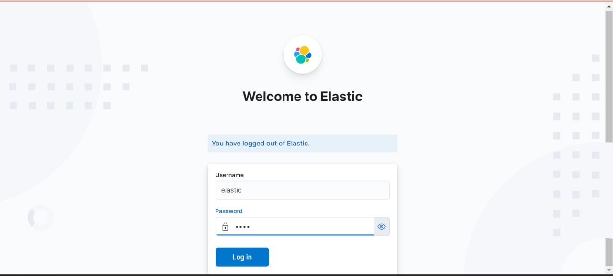
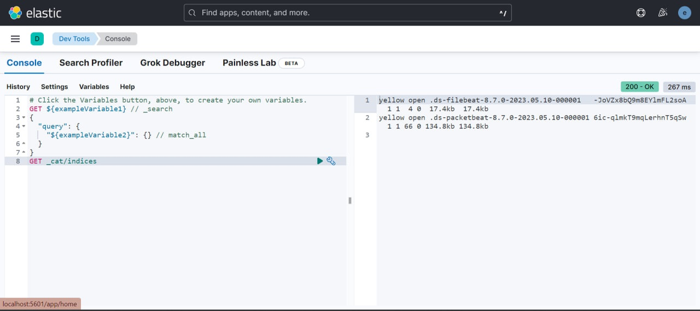
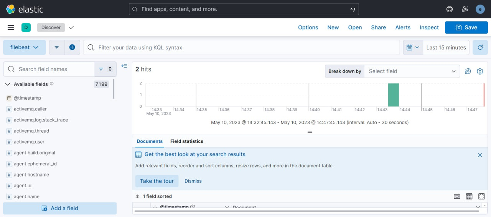
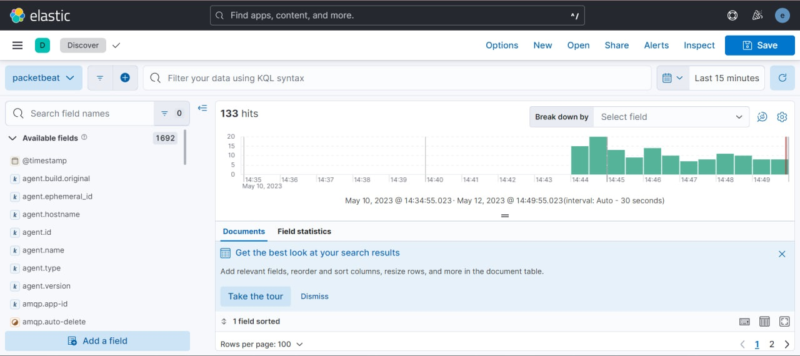

Развертывание системы мониторинга ELK Stack (Elasticsearch)
Цель работы
Освоить базовые подходы централизованного сбора и накопления информации
Освоить современные инструменты развертывания контейнирозованных приложений
Закрепить знания о современных сетевых протоколах прикладного уровня
Ход выполнения практической работы
Для разворачивания системы сбора информации Elasticsearch был использован Docker.
Шаг 1 - Предварительная конфигурация
1.1 Для работы elasticsearch требуется увеличить размер виртуальной памяти системы:
sudo sysctl -w vm.max_map_count=262144Шаг 2 - Cоздание docker-compose.yml
2.1 Создаем сервис setup:
setup:
image: elastic/elasticsearch:${STACK_VERSION}
volumes:
- certs:/usr/share/elasticsearch/config/certs
user: "0"
command: >
bash -c '
if [ x${ELASTIC_PASSWORD} == x ]; then
echo "Set the ELASTIC_PASSWORD environment variable in the .env file";
exit 1;
elif [ x${KIBANA_PASSWORD} == x ]; then
echo "Set the KIBANA_PASSWORD environment variable in the .env file";
exit 1;
fi;
if [ ! -f config/certs/ca.zip ]; then
echo "Creating CA";
bin/elasticsearch-certutil ca --silent --pem -out config/certs/ca.zip;
unzip config/certs/ca.zip -d config/certs;
fi;
if [ ! -f config/certs/certs.zip ]; then
echo "Creating certs";
echo -ne \
"instances:\n"\
" - name: es01\n"\
" dns:\n"\
" - es01\n"\
" - localhost\n"\
" ip:\n"\
" - 127.0.0.1\n"\
" - name: filebeat\n"\
" dns:\n"\
" - es01\n"\
" - localhost\n"\
" ip:\n"\
" - 127.0.0.1\n"\
" - name: packetbeat\n"\
" dns:\n"\
" - es01\n"\
" - localhost\n"\
" ip:\n"\
" - 127.0.0.1\n"\
> config/certs/instances.yml;
bin/elasticsearch-certutil cert --silent --pem -out config/certs/certs.zip --in config/certs/instances.yml --ca-cert config/certs/ca/ca.crt --ca-key config/certs/ca/ca.key;
unzip config/certs/certs.zip -d config/certs;
fi;
echo "Setting file permissions"
chown -R root:root config/certs;
find . -type d -exec chmod 750 \{\} \;;
find . -type f -exec chmod 640 \{\} \;;
echo "Waiting for Elasticsearch availability";
until curl -s --cacert config/certs/ca/ca.crt https://es01:9200 | grep -q "missing authentication credentials"; do sleep 30; done;
echo "Setting kibana_system password";
until curl -s -X POST --cacert config/certs/ca/ca.crt -u "elastic:${ELASTIC_PASSWORD}" -H "Content-Type: application/json" https://es01:9200/_security/user/kibana_system/_password -d "{\"password\":\"${KIBANA_PASSWORD}\"}" | grep -q "^{}"; do sleep 10; done;
echo "All done!";
'
healthcheck:
test: ["CMD-SHELL", "[ -f config/certs/es01/es01.crt ]"]
interval: 1s
timeout: 5s
retries: 1202.2 Создаем сервис главной ноды:
es01:
depends_on:
setup:
condition: service_healthy
image: elastic/elasticsearch:${STACK_VERSION}
volumes:
- certs:/usr/share/elasticsearch/config/certs
- esdata01:/usr/share/elasticsearch/data
ports:
- ${ES_PORT}:9200
environment:
- node.name=es01
- cluster.name=${CLUSTER_NAME}
- cluster.initial_master_nodes=es01
#- discovery.seed_hosts=es02,es03
- ELASTIC_PASSWORD=${ELASTIC_PASSWORD}
- bootstrap.memory_lock=true
- xpack.security.enabled=true
- xpack.security.http.ssl.enabled=true
- xpack.security.http.ssl.key=certs/es01/es01.key
- xpack.security.http.ssl.certificate=certs/es01/es01.crt
- xpack.security.http.ssl.certificate_authorities=certs/ca/ca.crt
- xpack.security.transport.ssl.enabled=true
- xpack.security.transport.ssl.key=certs/es01/es01.key
- xpack.security.transport.ssl.certificate=certs/es01/es01.crt
- xpack.security.transport.ssl.certificate_authorities=certs/ca/ca.crt
- xpack.security.transport.ssl.verification_mode=certificate
- xpack.license.self_generated.type=${LICENSE}
mem_limit: ${MEM_LIMIT}
ulimits:
memlock:
soft: -1
hard: -1
healthcheck:
test:
[
"CMD-SHELL",
"curl -s --cacert config/certs/ca/ca.crt https://localhost:9200 | grep -q 'missing authentication credentials'",
]
interval: 10s
timeout: 10s
retries: 1202.3 Создаем сервис графической панели управления Kibana:
kibana:
depends_on:
es01:
condition: service_healthy
image: elastic/kibana:${STACK_VERSION}
volumes:
- certs:/usr/share/kibana/config/certs
- kibanadata:/usr/share/kibana/data
ports:
- ${KIBANA_PORT}:5601
environment:
- SERVERNAME=kibana
- ELASTICSEARCH_HOSTS=https://es01:9200
- ELASTICSEARCH_USERNAME=kibana_system
- ELASTICSEARCH_PASSWORD=${KIBANA_PASSWORD}
- ELASTICSEARCH_SSL_CERTIFICATEAUTHORITIES=config/certs/ca/ca.crt
mem_limit: ${MEM_LIMIT}
healthcheck:
test:
[
"CMD-SHELL",
"curl -s -I http://localhost:5601 | grep -q 'HTTP/1.1 302 Found'",
]
interval: 10s
timeout: 10s
retries: 1202.4 Пропишем используемые Docker volume:
volumes:
certs:
driver: local
esdata01:
driver: local
kibanadata:
driver: localШаг 3 - Добавление средства сбора информации из файлов журналов Filebeat
3.1 Создаем сервис для запуска Filebeat:
filebeat:
depends_on:
es01:
condition: service_healthy
image: elastic/filebeat:${STACK_VERSION}
container_name: filebeat
command: filebeat -e -strict.perms=false
volumes:
- ./filebeat.yml:/usr/share/filebeat/filebeat.yml
- ./logs/:/var/log/
- certs:/usr/share/elasticsearch/config/certs
environment:
- ELASTICSEARCH_HOSTS=https://es01:9200
- ELASTICSEARCH_USERNAME=elastic
- ELASTICSEARCH_PASSWORD=${ELASTIC_PASSWORD}
- ELASTICSEARCH_SSL_CERTIFICATEAUTHORITIES=config/certs/ca/ca.crtГде:
filebeat.yml – файл конфигурации Filebeat;
logs – каталог с лог-файлами.
3.2 Создаем файл конфигурации filebeat.yml:
filebeat.inputs:
- type: filestream
id: sys-logs
enabled: true
paths:
- /var/log/*
output.elasticsearch:
hosts: '${ELASTICSEARCH_HOSTS:elasticsearch:9200}'
username: '${ELASTICSEARCH_USERNAME:}'
password: '${ELASTICSEARCH_PASSWORD:}'
ssl:
certificate_authorities: "/usr/share/elasticsearch/config/certs/ca/ca.crt"Шаг 4 - Добавление средства средства сбора сетевого трафика Packetbeat
4.1 Создаем сервис для запуска Packetbeat:
packetbeat:
depends_on:
es01:
condition: service_healthy
image: elastic/packetbeat:${STACK_VERSION}
container_name: packetbeat
user: root
cap_add:
- NET_RAW
- NET_ADMIN
command: packetbeat -e -strict.perms=false
volumes:
- ./packetbeat.yml:/usr/share/packetbeat/packetbeat.yml
- certs:/usr/share/elasticsearch/config/certs
- /run/docker.sock:/run/docker.sock
environment:
- ELASTICSEARCH_HOSTS=https://es01:9200
- ELASTICSEARCH_USERNAME=elastic
- ELASTICSEARCH_PASSWORD=${ELASTIC_PASSWORD}
- ELASTICSEARCH_SSL_CERTIFICATEAUTHORITIES=config/certs/ca/ca.crt4.2 Создаем файл конфигурации packetbeat.yml:
packetbeat.interfaces.device: any
packetbeat.flows:
timeout: 30s
period: 10s
packetbeat.protocols.dns:
ports: [53]
include_authorities: true
include_additionals: true
packetbeat.protocols.http:
ports: [80, 5601, 9200, 8080, 8081, 5000, 8002]
packetbeat.protocols.memcache:
ports: [11211]
packetbeat.protocols.mysql:
ports: [3306]
packetbeat.protocols.pgsql:
ports: [5432]
packetbeat.protocols.redis:
ports: [6379]
packetbeat.protocols.thrift:
ports: [9090]
packetbeat.protocols.mongodb:
ports: [27017]
packetbeat.protocols.cassandra:
ports: [9042]
processors:
- add_cloud_metadata: ~
output.elasticsearch:
hosts: '${ELASTICSEARCH_HOSTS:elasticsearch:9200}'
username: '${ELASTICSEARCH_USERNAME:}'
password: '${ELASTICSEARCH_PASSWORD:}'
ssl:
certificate_authorities: "/usr/share/elasticsearch/config/certs/ca/ca.crt"Шаг 5 - Запуск сервисов
docker-compose upКластер ElasticSearch успешно запущен.
Шаг 6 - работа с ElasticSearch
6.1 Перейдём на веб-ресурс localhost:5601
Авторизуемся от имени пользователя elastic:

Проверяем работоспособность с помощью GET-запроса _cat/indices:

Filebeat и Packetbeat успешно запущены.
6.2 Проверяем работоспособность Filebeat
Создание Data view для лог-файлов:

6.3 Проверяем работоспособность Packetbeat
Создание Data view для трафика:

Оценка результата
Была развёрнута система ElasticSearch и настроена система сбора трафика и лог-файлов.
Вывод
В результате работы была освоена система контейнеризации приложений Docker, работа с Docker-compose и освоена система централизованного сбора и накопления информации ElasticSearch.